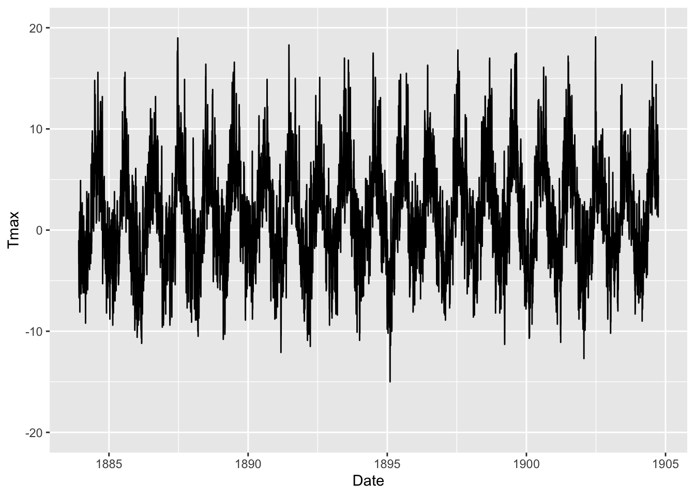
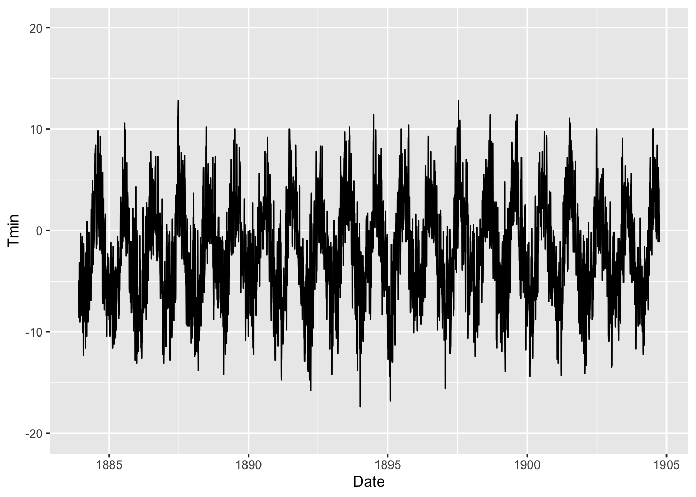
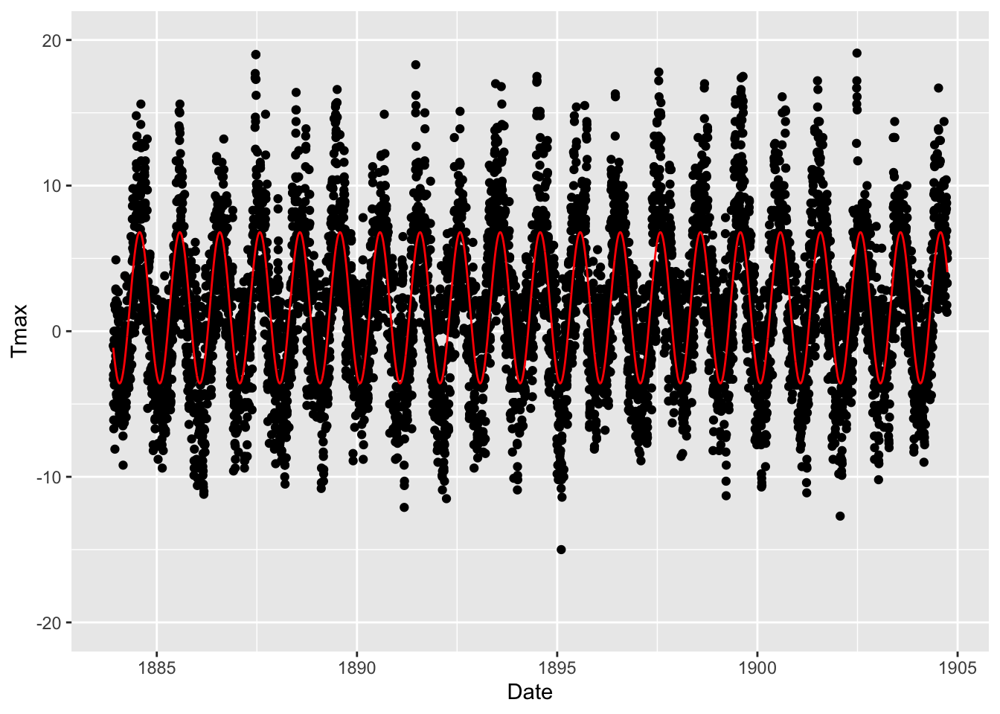
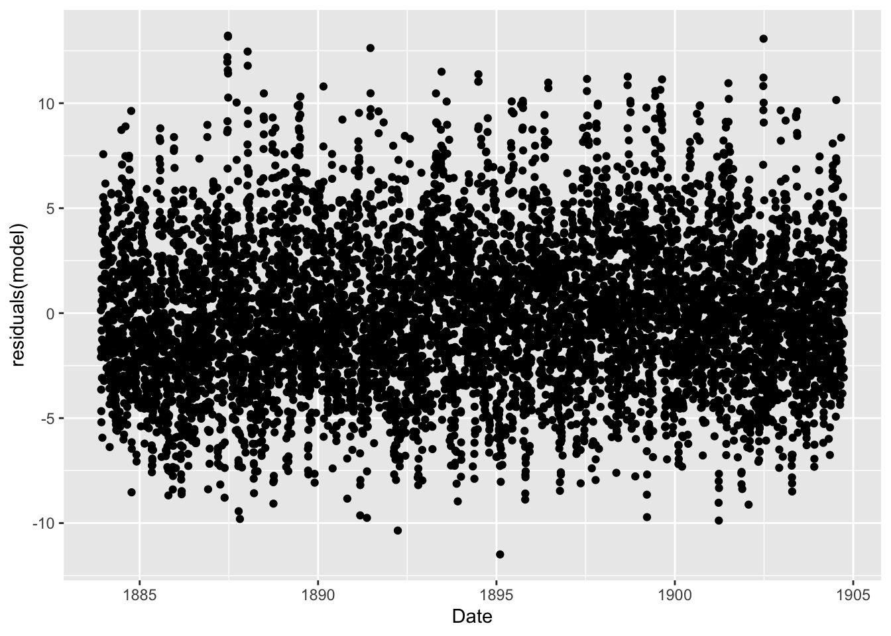
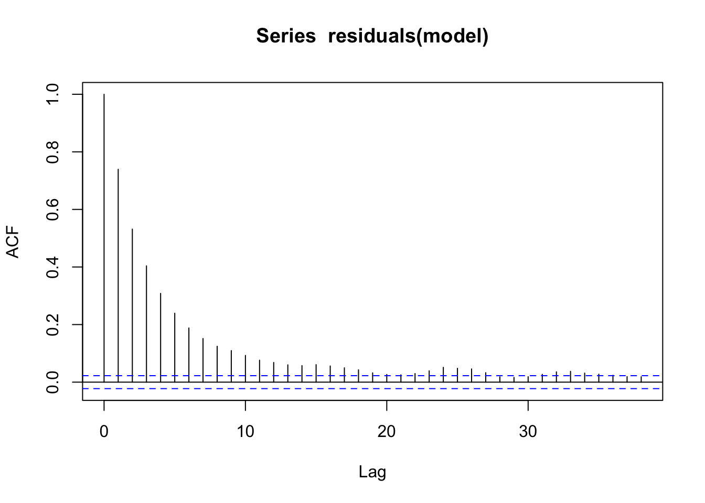
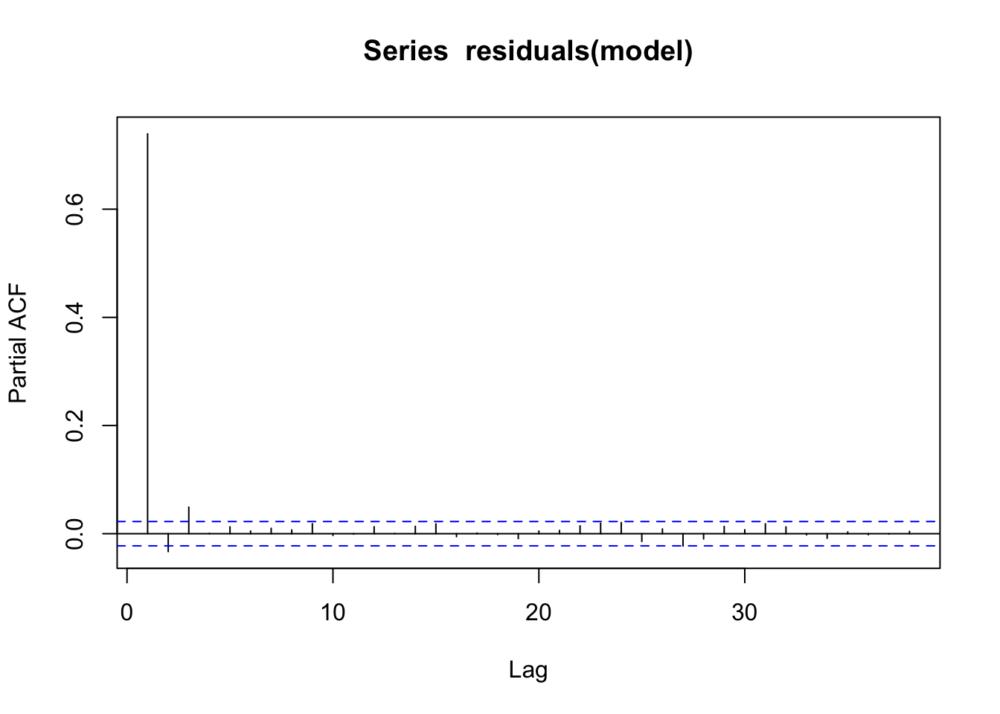

1.1 Time series data
The weather on Ben Nevis
At 1345m above sea level, Ben Nevis is the highest mountain in the UK and the weather at the summit can be very severe. In the 19th century, a remarkable effort was made to document conditions at the summit. Following a public appeal, an observatory was set up on the summit to allow a small group of meteorologists to make recordings. This was done hourly from 1883 to 1904, producing one of the most remarkable weather datasets from the Victorian era. Hawkins et al. (2019) describe a recent citizen science project which has made the data available in digital form. The data are available from the CEDA Archive which contains a very large collection of environmental data from atmospheric and earth observation research.
path <- rp.datalink("Ben_Nevis")
Ben_Nevis <- read.csv(path) %>%
rename(Tmin = 5, Tmax = 6) %>%
mutate(Date = as.Date(paste(Year, Month, Day), format = "%Y %m %d"),
yday = yday(Date),
year = decimal_date(Date))
ggplot(Ben_Nevis, aes(Date, Tmax)) + geom_line() + ylim(-20, 20)
ggplot(Ben_Nevis, aes(Date, Tmin)) + geom_line() + ylim(-20, 20)
In time series data, we are often interested in whether there is trend or seasonal effects and what these look like. We may also be interested in the influence of covariates. These may apply to the whole time series, such as characteristics of the location at which different time series are recorded, or they may themselves be time series running in parallel.
Here it is clear that there is a strong seasonal effect. How should we model this as its shape is clearly non-linear? We might use a trigonometric expression in the day of the year (yday) such as \(\beta cos(2 \pi (yday - \nu) / 366)\), where the parameter \(\nu\) corresponds to the day of the year at which the temperature is largest and \(\beta\) fixes the amplitude of tbe seasonal effect. In fact, if we expand the expression by trigonometric identities then it turns out that this can be expressed as \(\beta_s sin(2 \pi cos(2 \pi yday / 366)) + \beta_s cos(2 \pi cos(2 \pi yday / 366))\). This expression is linear in the parameters \(\beta_s\) and \(\beta_c\), using the new variables \(cos(2 \pi yday / 366)\) and \(sin(2 \pi yday / 366)\). This is a very convenient device for fitting a simple form of seasonal effect. The plot below sugests that we have made a start but that a more complex description of the seasonal effect may be needed. This could be pursued by employing sin and cos functions of higher frequency, but a different appraoch will be described later in this chapter.
Ben_Nevis$cs <- cos(2 * pi * Ben_Nevis$yday / 366)
Ben_Nevis$sn <- sin(2 * pi * Ben_Nevis$yday / 366)
model <- lm(Tmax ~ cs + sn, data = Ben_Nevis)
summary(model)##
## Call:
## lm(formula = Tmax ~ cs + sn, data = Ben_Nevis)
##
## Residuals:
## Min 1Q Median 3Q Max
## -11.492 -2.512 -0.236 2.372 13.219
##
## Coefficients:
## Estimate Std. Error t value Pr(>|t|)
## (Intercept) 1.60724 0.04087 39.33 <2e-16 ***
## cs -4.59861 0.05776 -79.61 <2e-16 ***
## sn -2.40571 0.05783 -41.60 <2e-16 ***
## ---
## Signif. codes: 0 '***' 0.001 '**' 0.01 '*' 0.05 '.' 0.1 ' ' 1
##
## Residual standard error: 3.565 on 7606 degrees of freedom
## Multiple R-squared: 0.5159, Adjusted R-squared: 0.5158
## F-statistic: 4053 on 2 and 7606 DF, p-value: < 2.2e-16ggplot(Ben_Nevis, aes(Date, Tmax)) + geom_point() + ylim(-20, 20) +
geom_line(y = fitted(model), col = 'red')
ggplot(Ben_Nevis, aes(Date, residuals(model))) + geom_point()
A statistical feature which makes time series distinctive is that there is often autocorrelation, meaning that the variation or random component of successive points tend to be linked to the variation at adjacent points. The autocorrelation and partial autocorrelation function, displayed below, quantify this, with horizontal dashed lines to indicate the likely range of variation when the true correlations are zero. The partial autocorrelation function is more useful as it fits simple autoregressive models of different order and in this case there seems to be a strong indication that a model of prder 1 is needed.

The nlme package offers an alternative set of tools for constructing mixed model and for dealing with different forms of variation more generally. The gls function allows correlation to be accommodated. Notice that the standard errors for the model terms are larger than in the earlier model. This reflects the fact that the presence of correlation reduced the information available in the observations.
library(nlme)
model <- gls(Tmax ~ cs + sn, data = Ben_Nevis, correlation = corAR1())
summary(model)$tTable## Value Std.Error t-value p-value
## (Intercept) 1.607650 0.1057893 15.19672 2.103882e-51
## cs -4.598474 0.1492943 -30.80140 1.977174e-196
## sn -2.406502 0.1494328 -16.10424 2.104183e-57We have assumed that there is no long term trend in the series. This can be chacked by adding a term for year, on a continuous scale. The result does not provide convincing evidence that we need this, so we might revert to the model which has a seasonal effect, with correlated errors. The plot of the fitted values is indistinguishable from the plot of the model without correlation.
library(nlme)
model_trend <- gls(Tmax ~ year + cs + sn, data = Ben_Nevis,
correlation = corAR1())
summary(model_trend)$tTable## Value Std.Error t-value p-value
## (Intercept) -61.66373513 33.2285989 -1.855743 6.352888e-02
## year 0.03340042 0.0175410 1.904134 5.693044e-02
## cs -4.59011863 0.1489906 -30.808103 1.650794e-196
## sn -2.40180011 0.1490847 -16.110307 1.914230e-57